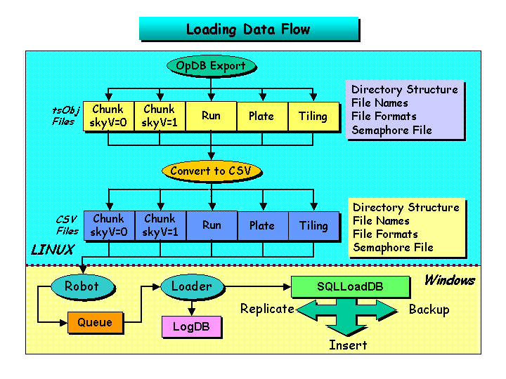
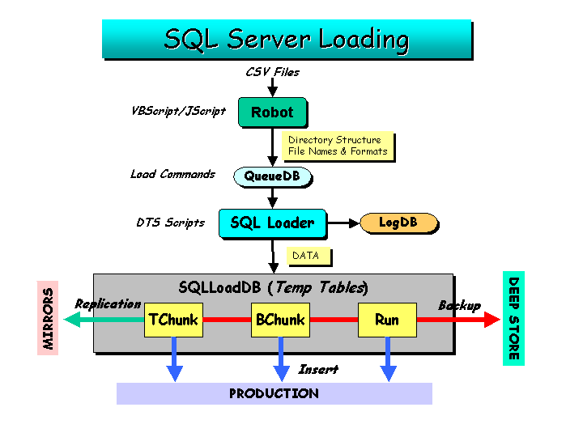
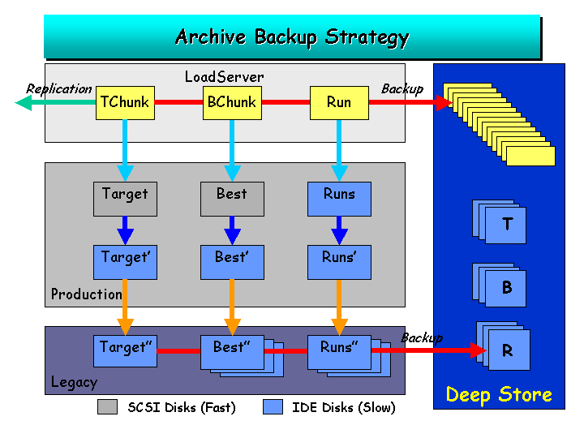

CSV Structure
Comma separated value (CSV) files will be used as inputs to the loader
Robot that
will queue
the loading directives for the data to be loaded into the SQL Server
tables for the various
databases.
This design does not as yet contain the changes
necessary for the inclusion of tiling and mask information.

Figure 1. Loading Robot.

Figure 2. The Loading Queue.

Figure 3. Overview of Databases.

Ani R. Thakar
Last Modified: April 24, 2002.